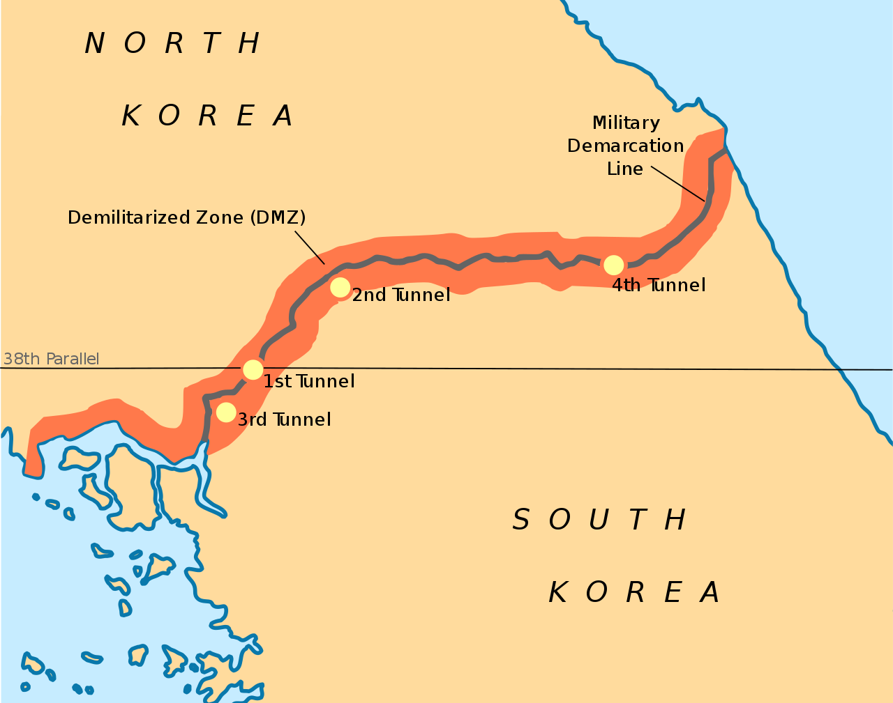
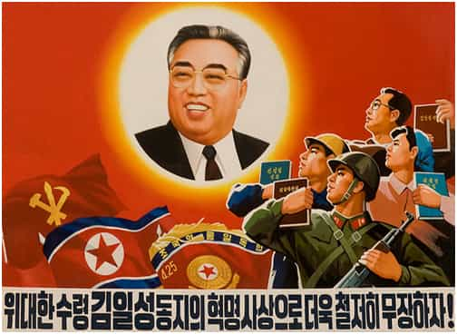
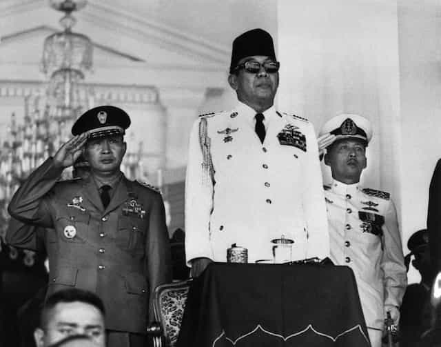
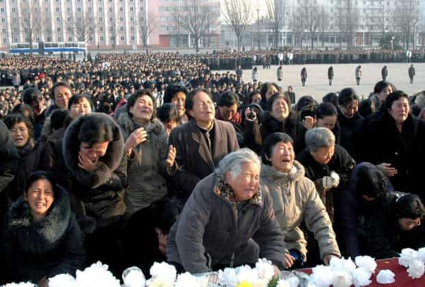

< < < Back
Is North Korea Really A Threat To The United States? – Return Of Kings
With an eventual armed conflict between North Korea and the U.S. and some of its regional allies like South Korea and Japan waiting around the corner, it is relevant to look at this country from a cultural and historical point of view in order to understand more of one of America’s arch enemies (besides Russia and Iran, at least according to the Deep state and neocons).
Typically people in general know that it is an isolated socialist country that was divided in the aftermath of World War II and the Korean War (1950–53), but there is of course much more to it. Therefore I intend to shed light on some fundamental aspects of culture, history and politics with regard to North Korea.
I have used Donald Goldstein and Harry Maihafer’s book The Korean War (2001), Donald Baker’s Korean Spirituality (2008), The World Factbook, and various additional sources in order to describe and analyze some of the core features and tenets of North Korean culture and political capacity. Obviously, people know much less about North Korea than South Korea, so I have tried to be careful and only stressed unimpeachable facts.
The formation of North Korea
Korea has a history which stretches thousands of year, and a written language based on the Chinese script which was invented by King Sejong in the 15th century. The military and political strength of Korea has differed over time, but generally the Kingdom (or kingdoms) has been caught between China and other larger powers. Unlike many other nations and kingdoms throughout Eurasia, the Kingdom of Guryeo managed to withstand the Mongol invasions (1231–1259).

Much culture, including religion and philosophy, stems from China, such as Schamanism, Confucianism and Buddhism. Even Catholicism is a result of Koreans who temporarily migrated to China in the late 18th century and brought it back on a micro scale.
In the 19th century and forward, Korea was supported and largely controlled by China until Japan rose as a regional superpower and formally annexed the entire peninsula between 1910–1945. During that time Koreans had to bow before the Japanese Shinto gods. This has left Koreans in general with resentment against the Japanese, even though they have cooperated economic-wise (South Korea in particular but also North Korea in the first decades following World War II).
In the aftermath of World War II, and the general liberal West versus Communist East global dichotomy, Korea was divided along the 38th parallel. Something that could have been only temporary became permanent, and so also the war which lasted 1950–53, during which the northern part fought with the Communists from Soviet and China and the South with the United States (partly similar to the Vietnam conflict).
Even though there has been an official armistice since then, the war is still ongoing although dormant. The Democratic People’s Republic of Korea (DRK) still wants to usurp the Republic of Korea (ROK) and vice versa, and various provocations have taken place throughout modern history.

Juche as a paradoxical ideology
Juche (self-reliance) is the unthreatened hegemonic ideology in DRK and is largely based on Marxist-Leninst ideas and hinges on an industrialized plan economy. It is also puristic in that sense that it does not allow loan words or any other form of influences from the West (only some from the Soviet Union), and conservative with regard to the use of formal speech style. Hasipsio-che is used between pretty much all adults in public, whereas in South Korea Haeyo-che and various intimate and informal speech styles are common in many contexts.
As the scholar Charles Armstrong notes, however, it has not been as isolationist as it is now (although DRK is still dependent on China). In the 1960s and 70s, Kim Il-Sung, DRK:s indisputed leader, wanted to show the world that North Korea was a role model for post-colonial nations in general.
The largest focus was on Southeast Asia (Vietnam and Indonesia in particular), Africa, the Middle East and Central America, but the Pyonyang administration also had diplomatic relations with European countries like Norway, Sweden and Yugoslavia. Kim Il-Sung had particularly close ties to socialists in Ethiopia, but whom in the end did not feel that Juche ”translated” to them.

Paradoxically, DRK was more globalist during that time than it is now – with the intent to disseminate the gospel of Juche – and was overall wealthier than the ROK until the late 1960s. In parallel with worsening economic status in the mid-1980s and onwards, DRK had lost whatever global political-economic influence it had, and during the reign of Kim Jung-Il and his son Kim Jong-un things have become worse.
At that time and forward the material and economic gap between North Korea and South Korea has grown larger, in conjunction with ROK improving their diplomatic relations with pretty much the rest of the world while DRK has become more isolated.

Due to both environmental (for example floods and crop failures) and man-made factors (for instance that the former Soviet Union cut off subsidies and the failure of the economic-distributive system), between 1994–1998 North Korea experienced a severe famine, and as far as anecdotal evidence from defectors such as Yeonmi Park (whose lecture I have attended and to whom I have asked several questions about culture) goes, the general living conditions for the people are pretty bad. For instance children are forced to watch public shooting executions with intestines splattered all over the place.
The cult of the Kim dynasty as quasi-religious manifestation
Typically, Marxist-Leninism is an atheistic ideology, and indeed religions are not nearly as wide-spread in North Korea as in South Korea, where Buddhism and Christianity have many followers (about 23 percent Buddhists and 29 percent Christian).
However, since Korea overall historically has been largely influenced by Confucianism and to some extent still is, a cult-like worship of its leaders—akin to that of Mao Zedong in China—can be identified.
It is not just the current leader in DRK that receives imposed worship, but the Kim dynasty in general. Kim is the most common surname (or first name, depending on how you see it) in all of Korea, but it is the particular Kim family—the foundation of North Korea—that is the focal point of veneration.
Apart from that there is some evidence of a small rise of Shamanism, such as fortune tellers, and Evangelical Christianity in North Korea. According to the World Factbook, the government sponsors religious groups in order to create an illusion of religious freedom. Therefore most real denominations are probably clandestine.

The North Korean military strength
Another important aspect, and perhaps the most significant from an American and Western point of view, is that historically North Korea has produced a significant amount of weapons and exported them to other nations, socialist countries in particular.
As scholar Andrea Berger stresses:
North Korea’s contemporary defence-export catalogue is larger than most international-security analysts appreciate, and it appears willing to sell anything surplus to its own requirements. Its offerings include off-the-shelf weapons systems, supporting infrastructure and ‘knock-down kits’; spare parts and munitions; weapons designs and technology; complete arms-production lines and factories; maintenance, repair and upgrade services; military and police training in a variety of disciplines; and logistical and procurement services. North Korea has successfully negotiated foreign contracts in all of these categories since the arms embargo was put in place in 2006.
According to Global Fire Power, North Korea is ranked 25th in the world in terms of military capacity. About 10 million are fit for service, whereas the actual military force (which includes women) are about 1.3 million and thus in fact larger than the United States army. This can be compared to South Korea, which is ranked 11th. Its allies, the United States and Japan, are ranked 1 and 7. I am far from a military expert but North Korea is actually not a serious threat compared to Russia, ranked 2 in the world.

If a World War III is going to happen it will in all likelihood mainly be between the U.S. and Russia. With that said the emerging nuclear-armed intercontinental ballistic missile (ICBM) program is far from unthreatening and some sort of more constructive diplomacy (push–pull strategies) ought to be implemented.
Hopefully, the stalemate can continue for the sake of all involved parties, until any Kim leader eventually will allow a re-unification with South Korea. Only a cultural relativist without lack of objective reasoning skills can claim that North Korea is as good as South Korea, despite its flaws.
In summary
Overall we know much less about what North Korea is like than South Korea. However, it is undisputedly a largely isolated and poor socialist country with a rather strong military force and arsenal at its disposal. Hence its capacity should not be easily underestimated, especially its nuclear program, although neither exaggerated.
Culturally it is more conservative than South Korea, with close to zero influences from the West in terms of popular culture and loan words. The imposed cult of the Kim dynasty has somewhat religious overtones, whereas religious pluralism is not nearly as large as in its democratic and free-market based southern neighbor.
Read More: What Modern South Korea Is Like